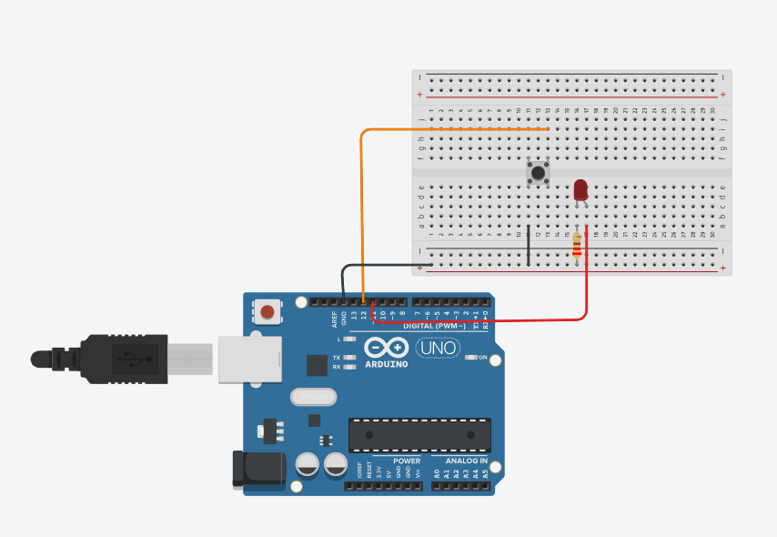

Não informadas.
O Grand Prix ocorreu do dia 13/04 ao dia 22/04 (inicialmente até dia 17, porém as entregas foram prorrogadas), onde cada grupo ficava com um tema e um desafio daquela tema de determinada empresa. Nós ficamos com o tema de descarbonização e a empresa Petrobras, onde o desafio era criar uma solução para minimizar a emissão de carbono em empresas de óleo e gás. Para isso, decidimos criar um sistema de filtro do carbono nas chaminés das empresas e um sistema de produção de ecoblocos com os resíduos. Foi uma semana muito produtiva e interessante, pois pensar em como desenvolver uma solução para um problema que impacta e afeta tanto o mundo e a população nos dias atuais torna tudo ainda mais desafiador, mas tentamos pensar em algo acessível e realista. Depois, como pedido, produzimos o PITCH do nosso projeto, o vídeo de protótipo (que envolvia tanto um site de monitoramento quando o filtro e o ecobloco em si) e também o lean canvas com detalhes da solução elaborada. Foi uma grande experiência envolvendo trabalho em equipe e visão de futuro, que com certeza vai ajudar no futuro no mercado de trabalho, assim como já está ajudando no presente. Pensar em uma solução para um problema tão complexo e atual, e desenvolver um protótipo para isso foi um grande desafio, mas também muito gratificante. O desenvolvimento do site também foi algo que gostamos bastante, e que nos fez aprender mais sobre HTML, CSS e JavaScript, além de nos ajudar a pensar em como criar uma interface amigável e funcional para o usuário.
Acessar lean canvas
.png)
.png)
.png)


H01: Reconhecer especificações técnicas e paradigmas de IoT; H02: Integrar dispositivos para coleta automática de dados; H03: Integrar dispositivos de comunicação de dados; H04: Reconhecer especificações de sensoriamento e parametrização; H05: Integrar projeto orientado a sensoriamento e controle.
Para esta atividade, primeiro montamos o protótipo na plataforma do Tinkercad, desta forma conseguimos visualizar onde cada item se encaixava e simular seu funcionamento. Começamos com o objetivo de acender o led, que deu super certo após simularmos a prototipagem no Tinkercad, e também o programamos em C++ para que ele piscasse, ligasse e desligasse a cada poucos segundos. Foi bem interessante começar esse primeiro contato com a prática e programação dessa forma, pois foi algo simples para entendermos. Logo, a atividade do led evoluiu para um semáforo. Para essa atividade consequente da atividade do led, também iniciamos prototipando o projeto na plataforma e simulando o protótipo com a programação em C++. Após dar certo no sistema, passamos para a parte prática, utilizando o Arduíno, leds e cabos, que conectamos no USB do computador, para que assim conseguíssimos enviar o código programado no arduíno e fazer o sistema de semáforo funcionar. Além disso, complementamos o nosso semáforo com sistema de semáforo de pedestre, programando para que quando o semáforo principal estivesse vermelho, o semáforo do pedestre estivesse verde, e vice e versa. A experiência foi maravilhosa e enriquecedora. Esse primeiro contato com C++ foi uma mudança de chaves e algo inovador, pois nunca havia programado antes e tive uma ótima experiência. Além de que, ver a programação ganhando vida no físico, foi ótimo para entender melhor o funcionamento das coisas. E o fato de iniciarmos com o led e evoluirmos para o semáforo nos ajudou a entender melhor como podemos aplicar de diversas formas diferentes um determinado conhecimento.

H01: Reconhecer especificações técnicas e paradigmas de IoT; H02: Integrar dispositivos para coleta automática de dados; H03: Integrar dispositivos de comunicação de dados; H04: Reconhecer especificações de sensoriamento e parametrização; H05: Integrar projeto orientado a sensoriamento e controle.
Após realizarmos as práticas do led acendendo, piscando e do semáforo, partimos para uma nova prática: acender e apagar o led com botão. Como sempre, iniciamos fazendo o protótipo no Tinkercad, para entendermos onde cada coisa se encaixaria e para programarmos essa função do botão em C++. Após montarmos e programarmos, fizemos a simulação na própria plataforma do Tinkercad, onde tivemos que fazer leves alterações e aí sim nosso sistema funcionou perfeitamente. Clicando o botão uma vez, o led acendia, na segunda vez, o led apagava. Foi ótimo montarmos primeiro online para que pudéssemos ver e saber caso algo tivesse dado erro. Então partimos para a prática, utilizando a placa, o arduíno, led, fios, resistência e o botão, montamos o sistema da mesma forma que prototipamos. Então, no aplicativo do Arduino UNO programamos da mesma forma da simulação, para que o botão executasse sua função. Conectamos então o que fizemos no USB do computador e o nosso led acendeu e apagou perfeitamente, obtendo um resultado positiov para a prática. Foi muito legal fazer mais essa nova experiência, porque passamos a entender como alguns sistemas de botões para ligas e desligar funcionam, e também tivemos mais uma experiência para nossa vida profissional, além de aprender a programar mais coisas em C++. Essa prática foi um pouco mais desafiadora, mas foi uma das mais interessantes que fizemos.
Atividades do 3º Trimestre estarão disponíveis em breve.